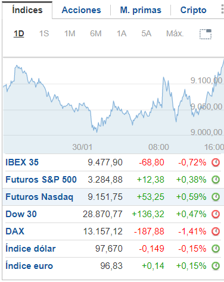

Los índices de Colombia cierran a la baja; el COLCAP cae un 0,03%


Investing.com – La Bolsa de Colombia cerró con descensos este jueves; los retrocesos de los sectores agricultura, COL Inversionist, y servicios públicos impulsaron a los índices a la baja.
Al cierre de Bogotá, el COLCAP cayó un 0,03%.
El mejor valor de la sesión en el COLCAP fue Grupo Argos SA (CN:ARG), con un alza del 1,46%, 260,0 puntos, hasta situarse en 18.060,0 al cierre. Le siguen Avianca Holdings Pf (CN:AVT_p), que avanzó un 1,28%, 25,0 puntos, para cerrar en 1.985,0, y Interconnection Electric SA ESP (CN:ISA), que subió un 1,24%, 240,0 puntos, hasta despedir la sesión en 19.620,0.
El mejor valor de la sesión en el COLCAP fue Grupo Argos SA (CN:ARG), con un alza del 1,46%, 260,0 puntos, A la cola del índice acabó Bolsa De Valores De Colombia (CN:BVC), que cayó un 6,95%, es decir, 820,0 puntos, para cerrar en 10.980,0. Cemargos (CN:CCB), por su parte, recortó un 1,82%, 120,0 puntos, y cerró en 6.460,0, mientras que Grupo de Inversiones Suramericana SA (CN:SIS) cedió un 1,22%, 400,0 puntos, hasta acabar en 32.520,0. Los números rojos se impusieron a los verdes en la Bolsa de Valores de Colombia por una diferencia de 18 frente a 6, y 9 cerraron planos.
Las acciones de Avianca Holdings Pf (CN:AVT_p) subieron hasta alcanzar su máximo de 52 semanas, al avanzar un 1,28%, 25,0, para situarse en 1.985,0. Los futuros del Futuros café C EE.UU. para entrega en marzo cayeron un 0,66%, 0,67, hasta $101,38 . En cuanto a las demás materias primas, los futuros del Futuros cacao EE.UU. para entrega en marzo repuntaron un 2,55%, 69,50, para quedarse en $2.796,50 , mientras que los futuros del oro para entrega en febrero subieron un 0,48%, 7,60, hasta $1.578,00 la onza troy.El USD/COP subió un 0,86%, para situarse en 3.414,00, mientras que el BRL/COP, por su parte, recortaba un 0,24% hasta 801,22.
El índice dólar cayó un 0,14%, hasta 97,683.
Comentar